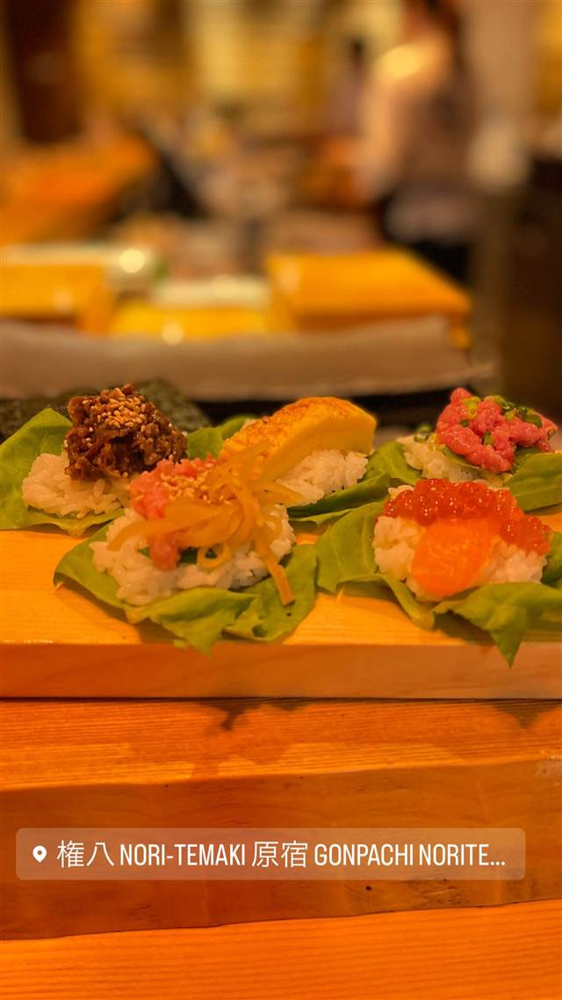

権八 NORI-TEMAKI 原宿
西麻布の名店権八系列、目の前で巻く温かい手巻き寿司
権八 NORI-TEMAKI 原宿 GONPACHI NORITE…
西麻布の名店「権八」を展開するGONPACHIグループが2018年に原宿にオープンした手巻き寿司専門店。温かい酢飯を目の前で一つずつ海苔で巻いてくれるスタイルで、松材や古民家の建材を使った360度カウンターが特徴的。
TRIVIA
豆知識
- 内装は松材と古民家の建築部材を使い「和文化とモダンの融合」をテーマにしている
- 開店3周年には贅沢メニューも含め全品330円のキャンペーンを実施したことがある
REVIEWS
世間の評判
3.11食べログ
高級海苔の手巻きと外国人向けの雰囲気
- 海苔がベチャつかない工夫と最高級の海苔の美味しさを評価する声が多い
- 外国人観光客向けでカウンターのみの店構えを残念に思う声がある
- 音楽の音量が大きいことやメニューが減ったことを残念に思う声もある
食べログ 口コミ156件
| 創業 | 2018年5月開業 |
|---|---|
| 系譜 | 西麻布の名店「権八」（キル・ビルのロケ地としても知られるGONPACHIグループ）が展開する手巻き寿司専門業態。 |
| 看板 | 手巻き寿司（贅沢ネタのラインナップ） |
| こだわり | 温かい酢飯を、目の前で一つひとつ海苔で巻き上げる。カリフラワーライスを使った低糖質メニューも用意。 |
| どこから | 都心 |
| 営業時間 | 月〜日 11:30-23:00 |
| 予算 | 昼 ～¥999 夜 ¥2,000～¥2,999 |
| 場所 | 原宿 東京都渋谷区神宮前6-35-3 コープオリンピア |
| メモ | 松材と古民家の建材を使った360度カウンター席 |
食べたもの：手巻き寿司
ONSEN & SAUNA